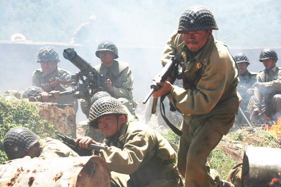

冯绍峰坠马现场相当触目惊心
据台湾媒体报道，内地男星冯绍峰外型挺拔帅气，因演出古装剧《兰陵王》在台湾人气大涨，霸气又深情的形象吸引大批粉丝。他2014年年底惊传为拍电影而坠马受伤，原称只有擦伤和关节扭伤，不过近日坠马的现场画面曝光，他才坦言当时伤势严重，甚至还痛到一度晕厥，令粉丝相当心疼。
冯绍峰被白马压
冯绍峰在电影新作《西游记之孙悟空三打白骨精》中饰演唐僧，2014年12月于无锡拍摄时，骑乘的白马在拍戏过程中受到惊吓，他因此从马背上坠地，还被重达550公斤的白马及道具行李压住，当场痛到晕过去，恢复意识时也是全脸皱在一起，相当痛苦的样子，而这也是他从影以来受伤最严重的一次。
随后，冯绍峰前往当地医院接受治疗，被医生确诊为腿骨断裂，需要休息2个月，不过敬业的他伤后第3天就现身电影记者会，甚至为了不拖延剧组进度，仅仅休养15天便重新开工，敬业态度令同剧演员和工作人员都相当钦佩，本人如同戏里的唐僧一样历经磨练而成长。
其实，在影视剧拍摄时期大大小小的片场安全事故时有发生，有影响大的，比如明星遭遇到的死伤事件，但更多的是那些群众演员的伤亡，由于诸多原因，而不被外界关注，没有大范围流传出来的，以至于常常被影视圈的表面风光所掩盖。
《梅兰芳》片场吊车倒塌
2007年9月29日，电影《梅兰芳》拍摄现场发生吊车倒塌事件。事发当晚，剧组正在北影厂一条街上拍摄青年梅兰芳（余少群饰）和齐如山（孙红雷饰）的戏。因为这场戏需要有很好的月光效果，所以剧组从外面调了一辆大吊车使用，拍摄中，大吊车突然失去平衡倾斜倒塌，臂先是砸中了制景中的房屋，屋子的几根梁柱和瓦块随之砸向正在现场的工作人员，当时在场的副导演米兰丁被砸中了脑袋，另3位工作人员则分别被砸中了左手、脸和腿部，幸好经医院救护后都没有生命危险。
《为你而来》片场发生车祸 潘粤明等三人受重伤入院
2009年5月13日中午，正在福建屏南拍摄电影《为你而来》的潘粤明在拍摄现场驾驶一辆吉普车时发生意外，车失控冲出路面，翻滚至山下。潘粤明与同车的女演员夏冰冰、一位摄影助理都受了重伤。潘粤明胸部受挤压和创伤较为严重，被诊断为是创伤性血胸和气胸，一度非常危险。另外两位伤者被诊断为不同程度的骨折，夏冰冰的盆骨骨折最为严重，另一位摄影助理掌骨骨折。事后，制片方和潘粤明遭同车受伤的夏冰冰索赔26万。
《狼烟北平》：道具枪意外走火
2008年4月，电视剧《狼烟北平》的片场拍摄一场战争戏时也发生了事故，演员王帅使用一把道具手枪突然走火，而王帅的手正巧捂住了枪口，顿时手被炸成焦黑色，剧组工作人员立即将王帅送进医院治疗。据了解，当时出现意外正是道具枪检查出现了问题。好在是道具枪，而医生经过检查也认为演员仅仅是轻微手部炸伤，影响不大。
《情错》：高虎撞死灯光师冯子永
2003年3月23日21时，《情错》剧组在青岛市中山路第一百盛商厦南侧人行道拍摄高虎驾车自30米外以每小时20至30公里的速度，驶至拍摄机位前2至3米处紧急停车的外景戏。但是车辆没有停住，撞向摄影机并撞倒七八个剧组工作人员，最后车辆撞在人行道路灯处停下，将灯光师冯子永挤在路灯杆上，冯子永经抢救无效死亡。2003年7月13日，青岛市市南法院对该案作出一审判决，以过失致人死亡罪判处高虎有期徒刑一年，缓期一年。高虎不服，向青岛市中级人民法院提起上诉。经二审审理查明，维持原判。
《我的团长我的团》：两起事故1死40伤
2008年4月8日电视剧《我的团长我的团》拍摄一场战争场面时突发爆炸，造成烟火组组长郭岩死亡，另外两人受伤。2008年4月20日电视剧《我的团长我的团》剧组临时搭建的廊桥垮塌，致使38名群众演员受伤，其中7人重伤。800万元！这是《我的团长我的团》今年4月连续发生两次事故之后，保守估计的直接经济损失。有消息称，第一次事故发生后，剧组赔了50万元左右，而第二次事故的重伤员每人可能也将获得赔付20万元左右，轻伤的赔付应该没有那么多。《我的团长我的团》总投资才3000万元，拍摄不到三分之一就接连发生事故。“目前医疗费开支非常大，而且大家知道，一般的剧组如果停工一天，损失可能就会上10万元，大的剧组损失就更严重。可以说现在的情况，如果放在一些小的影视公司可能就因此瘫痪了。”制片人吴毅表示投资方华谊兄弟公司会为此追加投资。
《高粱红了》：炸伤演员王挺
2009年5月9日，王挺在河北拍《高粱红了》最后一场被敌机轰炸戏时被爆伤。那是一场王挺背着伤员在火海中奔跑的镜头，王挺饰演的连长背着指导员在班长的掩护下逃跑。逃跑路线上布满炸点，就在王挺跑到一个炸点前准备跨越时意外发生了。随着一声爆炸响，一团火扑向王挺的脸。炸点就在王挺两腿之间爆炸，王挺感觉脸像被电击一样麻木，但他没有停下脚步，坚持拍完了镜头。同时受伤的还有三位演员，一位演员摸烧伤的下巴时，当即掉了一块皮。2009年底，因《高粱红了》被炸伤的王挺与剧组打官司索赔120万，并最终获得了70万赔偿。
《我和春天有个约会》：Selina和俞灏明被烧伤
SHE成员Selina和俞灏明在上海拍摄电视剧《我和春天有个约会》一场爆破戏时被烧伤，有消息称Selina烧伤多集中在背部、四肢属于三度烧伤面部没有太大问题，而俞灏明伤势更为严重，烧伤面积达50%。
当时Selina家人已经申请SOS医疗专机，欲带她回台治疗，但具体细节还在商议之中。对于二人何时能够康复，医生表示现在还无法回答。据悉，造成事故的主要原因已查明，为剧组烟火师失误提早引爆炸药所致。
张柏芝录制电视节目飞车坠落 第12节尾龙骨碎裂险致终身瘫痪

2002年1月，张柏芝在香港无线电视台录制公益节目《慈善星辉仁济夜》中表演“炮弹战车冲天飞”时发生意外，飞车提前落地，张柏芝因冲力过大而受伤，腰痛得无法动弹，工作人员不敢搬动她，先以颈箍固定住，之后召来救护车送往急救。据悉，当张时柏芝是第12节尾龙骨碎裂，差一点就导致终身瘫痪。由于当时无线为张柏芝所购的2000万保险要死亡才有得赔，因此这一次受伤令张柏芝因停工而损失了近1500万港元，并放弃了角逐当年十大劲歌金曲颁奖典礼奖项和春晚演出的机会。
电视剧《滇西1944》片场发生触电事故
2008年5月18日，电视剧《滇西1944》场记刘玉胜触电身亡。据悉，触电事故发生在剧组转场途中，因为大雨场记刘玉胜不幸触到了被车子带倒的电线上，当时即被电到，送到医院后抢救无效后身亡，卒年52岁。按照相关法律，场记是在工作中出事的，因此剧组把刘玉胜的意外列为工伤，剧组也比照相关规定进行了善后处理，赔偿50万。
李小龙之子李国豪拍电影《乌鸦》身亡 未留下一句遗言
李小龙之子李国豪是生前拍摄的最后一部电影是《乌鸦》。1993年4月1日零点30分，美国北卡罗莱纳州威尔明顿市的电影片场，摄影机下的李国豪手提一袋食品，与他演对手戏的迈克尔·麦西(Michael·Massey)站在20英尺外，手持一把0．44口径手枪，枪声一响，李国豪应声倒地，鲜血四溅。片组的人先是一愣，继而震惊哗然——假戏真演，李国豪中的是实弹。大家急忙把李国豪送医院抢救，12小时后宣告不治身亡。李国豪中弹直到死，一直处于昏迷状态，未留下一句遗言。
来源：今日头条